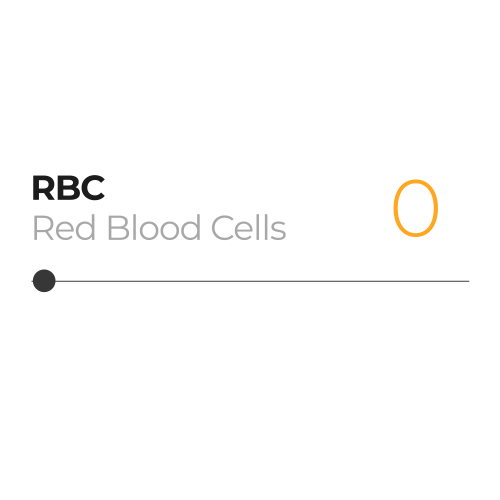
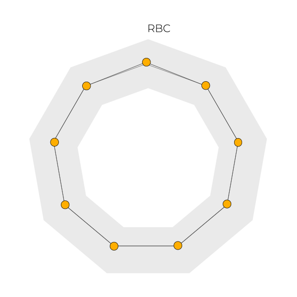

What is....
Start scrolling
Problem
Many of us go through the blood withdrawal procedure for different reasons. However, the results usually come in an unusual
format that sometimes can only be understood by professionals. Blood is a very important part of our bodies, aside from the
tranportation function, it stores important data about the body's performance. Therefore it's important that we
understand it and become participants in our own health and bodies.
Our blood consists of many elements, there are four main groups that most people get their blood tested on: Complete Blood Count (CBC),
Differential Blood Count (DBC), Basic Metabolic Panel, and Renal and Liver Function Tests. Each group represents blood elements. Every element
is different, it has a different function, different range, and different unit. This is why it's hard sometimes to make sense out of the test
results when each result looks different.
Tool
This tool allows you to experiment with the blood values and visualize it, the range sliders show the real value of the
blood element, however the visualization will show a different value. As mentioned before each element is different, therefore
all the input values will be normalized so they can fit together in one visualization. Furthermore, each blood component is represented
in a polygon shape, for example, Differential Blood Count is fitted in a pentagon because DBC hold 5 blood elements, and the pentagon has 5 corners.
These polygons are the guide to an ideal and normal score. The thickness of the polygon ring determines the normal range in that blood component.
The arrow button on the upper corner shows more explaination about the results. The first chart shows where the dots stand from the center of
the normal range without the scale. The second chart is a mirrored bar chart that measures the distance between the dot and the center
of the noraml range and convert it into a percentage, is the bar is -25% it means that the result is under average and it's 25% away from the
normal range.
1


4
5
6